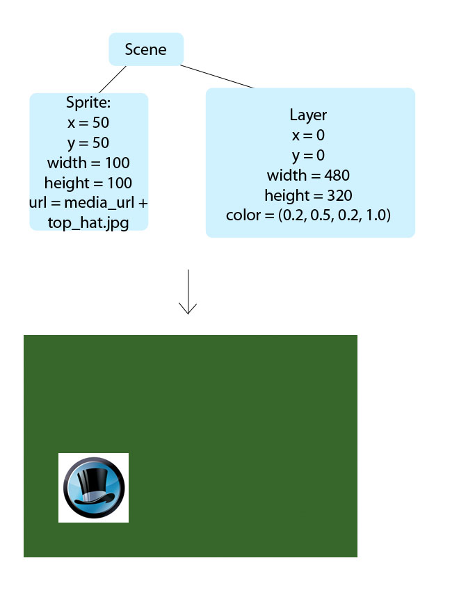

Written by Anson MacKeracher. July 1, 2011
This document provides a brief overview of the MonocleGL browser plugin and its related concepts. I quick read of this document is highly recommended if you are first starting to make Top Hat Monocle demos. Feel free to check out the sample code under Samples/ to get real examples of these concepts.
MonocleGL is a browser plugin, like Adobe Flash and Microsoft Silverlight. The major difference between MonocleGL and Flash and Silverlight is that MonocleGL is scripted with JavaScript instead of ActionScript or .NET. MonocleGL's JavaScript API is documented under the Documentation/ folder included in the Freelancer Pack.
Instead of writing ActionScript and compiling into an .swf file (in the case of Flash), JavaScript demos are loaded and executed dynamically by the web browser. You write the JavaScript, the website delivers the JavaScript, the client's browser interprets the JavaScript and tells the client's MonocleGL plugin what to draw on the screen.
MonocleGL uses a tree-like data structure to lay out its User Interface elements. The root node of the tree is the Scene, and all other elements (such as Sprites, Layers, TextBoxes, etc.) are attached as children to the root Scene. The following diagram illustrates a simple scene with an Sprite image and a green background layer. The sample code for this demo will follow.

window.startDemo = function(plugin, media_url) {
// Create new Scene, Sprite and layer objects
var scene = new Scene(plugin);
var sprite = new Sprite(plugin, media_url + "top_hat.jpg", 50, 50, 100, 100);
var layer = new Layer(plugin, 0, 0, 480, 320);
layer.setColor(0.2, 0.4, 0.2, 1.0);
// Add the layer and sprite to the scene
scene.addChild(layer);
scene.addChild(sprite);
// Tell the plugin to run these scene
plugin.setScene(scene.id);
}
Two UI elements commonly found in Top Hat Monocle demos are Primitives and Sprites. Primitives are broken down into several basic types: Circles, Rectangles and Lines.
Top Hat Monocle demos are generally written using the THM_Template.js JavaScript library. The Template provides functionality such as the sliding control and navigation panels as well as demo answer submission.
Simply include the JavaScript source file:
<script type="text/javascript" src="./library/THP_Library.js"></script>
Though you are free to explore the raw JavaScript API provided by MonocleGL, we advise you to use the standard design pattern followed by many other demos.
An empty demo template has been created for you, found in the Template/ directory in this package. The empty demo skeleton looks like:
function startDemo(plugin, media) {
var mediaURL = media;
var p = plugin;
var thmDemo = new THP_Template(p, 545, 371, 2);
var tween = new Tweener(p);
var physics = new Physics(p);
window.thmDemo = thmDemo;
thmDemo.setInstructionText("[Insert instruction here.]");
thmDemo.setTitle("[Insert title here]");
//------------------------------------------------------------
// Explore mode setup
this.setupExplore = function() {
// Explained in "Explore Mode"
...
};
//------------------------------------------------------------
// Setup Question 1
this.setupQ1 = function() {
// Explained in "Questions and Scenes"
...
};
//------------------------------------------------------------
// Setup Question 2
this.setupQ2 = function() {
// Explained in "Questions and Scenes"
...
};
// Run the setup functions for each questions
this.setupExplore();
this.setupQ1();
this.setupQ2();
// Start the demo
thmDemo.begin();
}
Here each scene's setup code has been separated into functions.
In every demo we declare the mediaURL to point to the directory where all the media is located. The purpose is to able to change the location of all the media with just a single line of code. For instance while developing it's note required that you have a server to host media. Instead set the mediaURL to the local location of the media on the hard drive. Then when the demo is submitted to Top Hat Monocle we can easily change the mediaURL to point to our server.
For example, if you wanted to load all the images from a public DropBox, you might use the following code:
var mediaURL = "http://dl.dropbox.com/u/122872/img/Tutorial/";
var sprite = new Sprite(plugin, mediaURL + "top_hat.png", 50, 50, 100, 100);
Currently only http:// and https:// protocols are supported in the media URL. As such file:// urls are currently not supported.
Some Top Hat Monocle demos have an "explore" mode, a scene which allows the student to play around with concepts or user interface elements that they will encounter in the demo.
The Template will call a function setupExplore() at the appropriate time to construct explore mode objects. All object creation should be done in the initQuiz function. All object visibility funcionality (showing / hiding layers, etc.) should be done in the loadQuiz function. All object destruction should be done int he cleanUp function. These functions will be called at the appropriate time by the Template.
//-------------------------------------------------------
// Explore mode setup
this.setupExplore = function() {
// Set the boolean flag to turn on the explore mode
thmDemo.boolExplore = true;
// Set the initialize function for explore mode
thmDemo.scnExplore.initQuiz = function() {
logDebug("Explore Init");
// Set the explore mode question text
thmDemo.scnExplore.strInstruction = "Explore Mode) [Enter explore mode text]";
};
// Set the display function for explore mode
thmDemo.scnExplore.loadQuiz = function() {
logDebug("Explore Load");
};
// Set the clean up function for explore mode
thmDemo.scnExplore.cleanUp = function() {
logDebug("Explore Clean up");
};
};
Each Demo is organized into individual question "scenes". Each scene gets the student to accomplish a small learning task, resulting in either a correct or incorrect answer.
In JavaScript, each question task is bundled into a MonocleGL "Scene" object. All UI elements are added as children to the scene's graph. The template keeps track of the demo's scenes internally in a 'sceneArray'. The sceneArray stores scenes in the order they are displayed.
The scene object must implement some standard methods in order to respond to user input.
The standard methods are:
//----------------------------------------------------
// Setup Question 1
this.setupQ1 = function() {
//Demo-specific sprites
var scene = thmDemo.getScene(0);
// Set the initialize function for Q1
scene.initQuiz = function() {};
// Set the display function for Q1
scene.loadQuiz = function() {};
// Set the clean up function for Q1
scene.cleanUp = function() {};
// Set the reset function for Q1
scene.resetQuiz = function() {};
// Set the show correct answer function for Q1
scene.showCorrectAnswer = function() {};
// Set the check answer function for Q1
scene.checkAnswer = function() {};
};
Here we the variable 'scene' being defined as the first scene in the template's scene array. We define functions and assign them to the 'initQuiz', 'loadQuiz', 'cleanUp', etc. variables of the scene object.
Each of these standard methods are called by the template automatically at the appropriate time.
initQuiz() is called once on each scene object. This method should be used to construct all of your scene's objects (such as Layers, Sprites, Labels, etc.). If all of your sprites are defined in a scene's initQuiz() method, the preloader will download all the images before launching the demo.
Sample initQuiz() implementation:
scene.initQuiz = function() {
// Set the Q1 question text
scene.strInstruction = "Q1) What is the airspeed velocity
of an unladen swallow?";
var baseball_sprite = new Sprite(plugin, media_url +
"baseball.png", 100, 100, 150, 150);
};
loadQuiz() is called just previous to when a scene is presented to the user. This method is where you should enable / disable objects used in the scene (such as animation timers), and subscribe or unsubscribe objects to user input
Sample loadQuiz() implementation:
scene.loadQuiz = function() {
physics.setEnvironment("pause:true"); // Pause physics
baseball.setPosition(20, 210); // Set baseball position
baseball.subscribe(); // Receive mouse events
};
cleanUp is where all the scene's odds and ends should be cleaned up. Objects should be unsubscribed from user input, timers disabled, etc.
Sample cleanUp() implementation:
scene.cleanUp = function() {
baseball.unsubscribe();
physics.removeAllPhysics();
};
resetQuiz is called when the user clicks the reset button while using this scene. This method should reset all scene objects to their original states, as though the scene is being run for the first time.
Sample resetQuiz() implementation:
scene.resetQuiz = function() {
baseball.setPosition(20, 210);
};
showCorrectAnswer() is called when the user clicks the "Show Answer" button while using this scene. This method should set the scene's objects to their correct final states. If this state change can be animated to illutrate the change then that animation should be created in this method.
scene.showCorrectAnswer = function() {
logDebug("Question 2 showCorrectAnswer()");
for(var i = 3; i < 7; i++) {
arrDrop[i].setText(arrAnswer[i]);
arrLayer[i].setColor(0,1,0,0.33);
}
};
Check answer is called when the user clicks the "Submit" button. This method should check the state of the important demo objects and return whether or not their state constitutes a correct answer. For example, if the demo requires the user to click 3 sprites, checkAnswer() would check each sprite to see if it's checked. If all of the sprites are checked it would return true, otherwise it would return false;
scene.checkAnswer = function() {
bCorrect = true;
for(var i = 3; i < 7; i++) {
if(arrDrop[i].getText() != arrAnswer[i]) {
arrLayer[i].setColor(1,0,0,0.33);
bCorrect = false;
} else {
arrLayer[i].setColor(0,1,0,0.33);
}
}
return bCorrect;
};
The curtain is used to signal the student that an animation is happening and they can't interact with the demo. The curtain itself is a 50% alpha black layer that blocks the mouse from the sending events to objects beneath it.
To show the curtain:
thmDemo.showCurtain();
To hide the curtain:
thmDemo.hideCurtain();
Hopefully you've learned enough about Top Hat Monocle demos to start implementing your design. Please check out the sample code in the Samples/ directory included in this package. An empty demo template has been created for you in the Template/ folder.